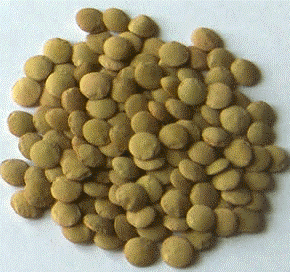
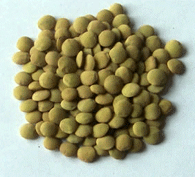
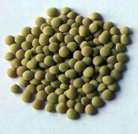
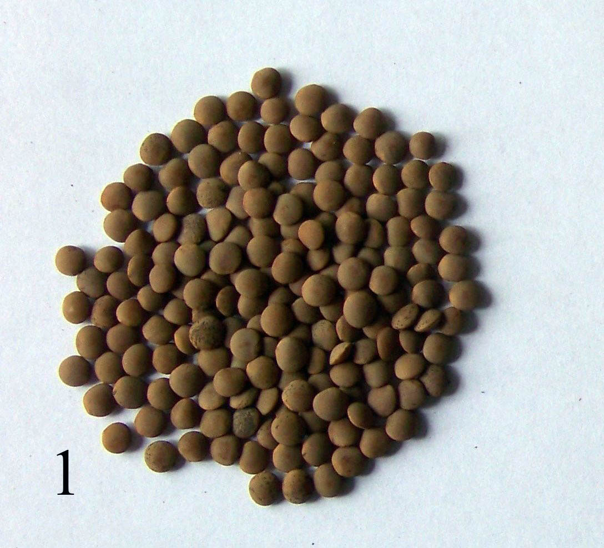
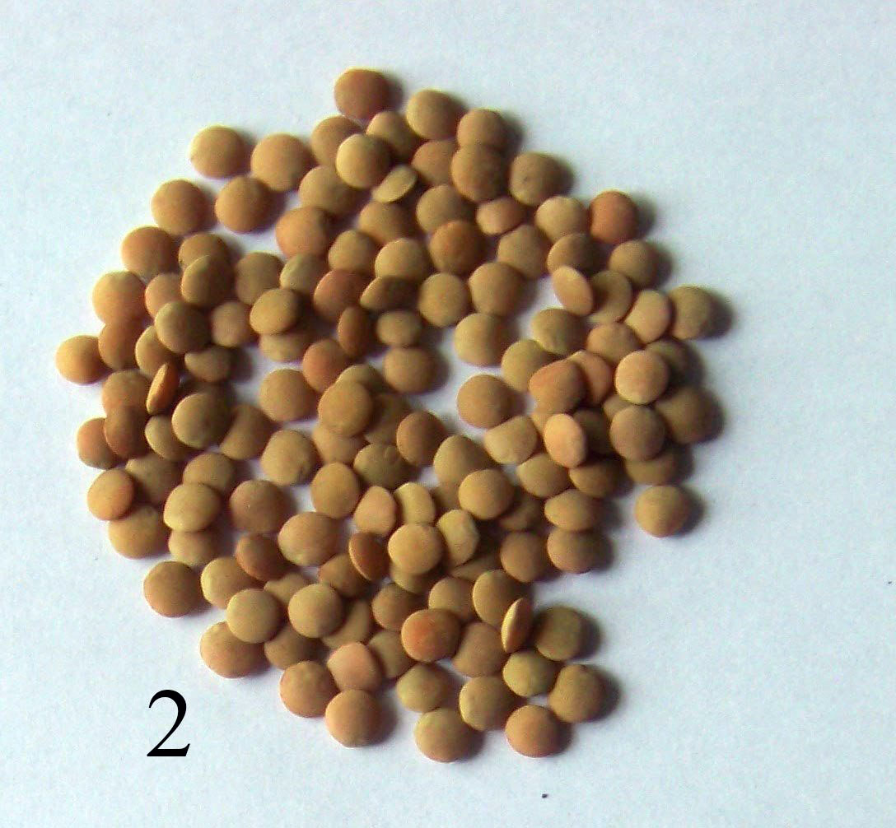
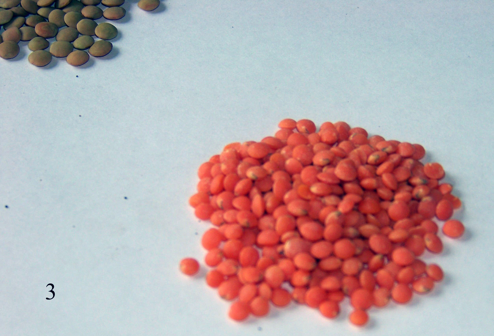

Сочевиця - (російською чечевица, англійською lentil, латинською Lens culinaris). Однорічна рослина родини бобових. В харчуванні використовується її насіння, яке характеризується високим вмістом білка. Сочевиця є однією з перших окультурених рослин. Під час археологічних розкопок на близькому сході було найдене її насіння віком до 8000 років. Згадується про неї в Біблії, за миску сочевичної юшки Ісав продав Якову первородство, також вона наводиться як інгредієнт при виготовлені хліба під час полону Євреїв в Вавілоні. Вживали її всі народи Середземномор’я, існують документи щодо постачання сочевиці з Єгипту до Риму на рівні з пшеницею та іншими культурами. Щодо України, то не відомо чи вживали сочевицю скіфи чи інші народності які проживали тут до слов’ян, перші письмові згадки про цю культуру належать до часів Київської русі. В літописах вона згадується під назвою “сочевіца”. В числі інших хлібів, які вирощувалися до ХV століття, її використовували для харчування ченці Печерського монастиря. Народна назва сочевиці – “ляща”, під цією назвою вона до цього часу відома в деяких місцевостях. Зустрічаються також такі народні назви: “вичка”, “журавлиний горох”. В Криму татари називають її “мерджімек”. Сочевиця може вільно рости в кліматичних умовах України. Дикий її предок Lens orientalis до цього часу росте в південному Криму.
Існує два підвиди сочевиці: Макросперма і Мікросперма.
Підвид макросперма має крупне насіння жовтого, зеленого або зелено-жовтого кольору. Більшого поширення він набув у країнах західної півкулі.
Мікросперма – має насіння меншого розміру і більш опуклої форми. Більше поширення має у країнах сходу.
На ринку сочевиця залежно від вигляду насіння, а саме його величини та забарвлення насіннєвої оболонки і сім’ядолей ділиться на декілька типів, основні з них: зелена крупна, зелена середня, зелена дрібна, червона, французька, іспанська, небуріюча.
 |
Зелена крупна сочевиця (Large Green, Laird type lentil) має світло-зелену насіннєву оболонку і жовті сім’ядолі, насіння плоске величиною в діаметрі 5,5 мм і більше, маса 1000 насінин від 50 г. Споживається, головним чином, в країнах Середземномор’я, як арабськими так і європейськими, а також в країнах Латинської та Північної Америки. Вирощується і споживається найбільше після червоної.
Зелена середня сочевиця (Medium Green, Richlea type lentil) - має світло-зелену насіннєву оболонку і жовті сім’ядолі, насіння плоске величиною в діаметрі 3,6-5,4 мм, маса 1000 насінин від 35-50 г. Ринок цієї сочевиці значно менший вона належить до вузько специфічних типів. Так, у Канаді де вирощується найбільше сочевиці на експорт іі частка становить лише 2 відсотки, хоча вона є найбільш урожайною.
Зелена дрібна сочевиця (Small Green, Eston type lentil) - має світло-зелену насіннєву оболонку і жовті сім’ядолі, насіння опукле, майже кругле, величиною в діаметрі до 3,5 мм, маса 1000 насінин до 35 г. Також досить вузько специфічний клас.
|
| Зелена крупна сочевиця |
 |
| Зелена дрібна сочевиця |
 |
Зелена дрібна сочевиця
Рис. 1. Ринкові типи зеленої сочевиці |
 |
Червона сочевиця має дуже різноманітне забарвлення насіннєвої оболонки – від чорного до безбарвного, головною її характерною рисою є оранжеве забарвлення сім’ядолей. Насіння може бути різної величини, але більшість сортів дрібнонасінні і кулясті. Даний тип сочевиці є найбільш поширеним – 75-80 % усієї сочевичної продукції. Споживається головним чином в країнах Азії, Індійського субконтиненту та в південносхідній частині Середземномор’я. Крім того, якщо зелена сочевиця споживається головним чином в цілому вигляді то червона сочевиця піддається процесу шелушіння і споживаються лише сім’ядолі, очищені від насіннєвої оболонки. |
 |
 |
| Червона дрібна сочевиця (1 і 2 - в насіннєвій оболонці; 3 - після шелушіння) |
Інші підтипи сочевиці такі, як: небуріюча, темнозелена, французька, коричнева або Іспанська – займають не більше 3 % ринку і часто їх споживання обмежується одним конкретним регіоном. Так французька сочевиця, яка має насіннєву оболонку в зелених і синіх точках та сім’ядолі жовтого кольору, споживається практично лише у Франції, а коричнева сочевиця, з жовтим забарвленням сімядолей (Pardina lentil) – споживається, головним чином, в Іспанії.
Назад до змісту |